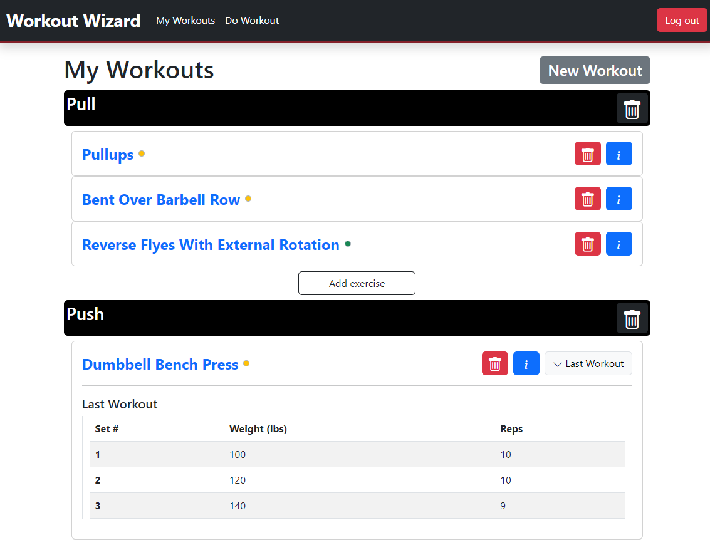
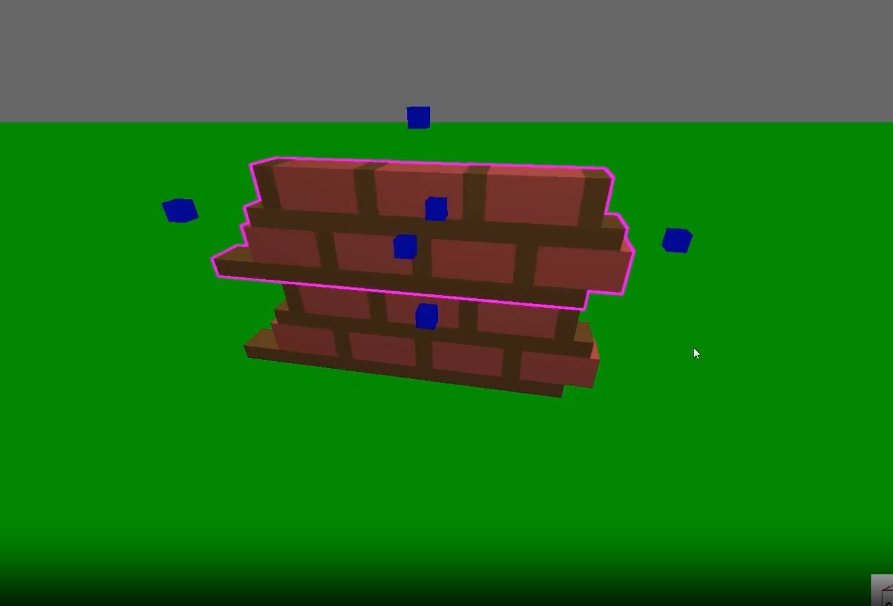
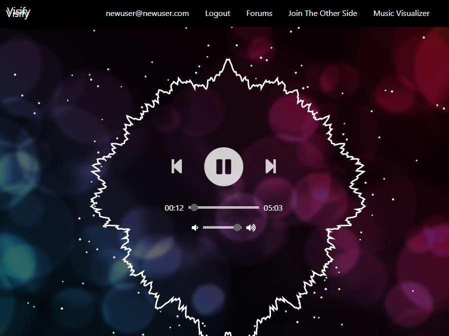
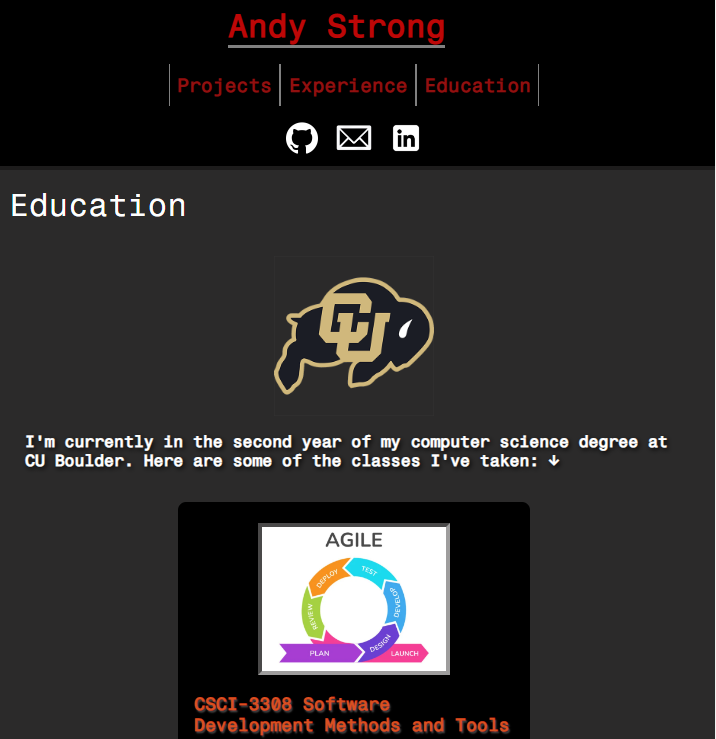

Projects
Workout Wizard

Technologies: Node.js, Express.js, HTML, CSS, Vanilla (no frameworks) JavaScript, Bootstrap, PostgreSQL, API Ninjas Exercise API
Workout Wizard is a full-stack workout tracker app that I built because I wanted to create an application that everyone could use and that interfaces with an API. You can visit it now. After you make an account, you can start creating workouts on the "My Workouts" page and fill them with exercises from the API Ninjas Exercise API. You can then execute your workouts on the "Do Workout" page. The weight, sets, and reps you do for each exercise are saved in the Postgres database and can be viewed on the "My Workouts" page. GitHub link.
Workout Wizard is a full-stack workout tracker app that I built because I wanted to create an application that everyone could use and that interfaces with an API. You can visit it now. After you make an account, you can start creating workouts on the "My Workouts" page and fill them with exercises from the API Ninjas Exercise API. You can then execute your workouts on the "Do Workout" page. The weight, sets, and reps you do for each exercise are saved in the Postgres database and can be viewed on the "My Workouts" page. GitHub link.
3D Building Game

Technologies: C++, OpenGL, GLEW, GLFW, GLM
I made this from scratch over the course of a few months (Aug 2022 - Feb 2023). This is a game where the player can build with three kinds of parts: cubes, slants (cube cut diagonally), and cylinders. The player can resize, move, copy, delete, and save their parts. An especially fun feature to implement was explosions. The player can explode their builds and watch everything blow apart in real time. To do this, I had to make sure parts could collide with eachother (I had to figure out collision detection and make a physics engine from scratch). More detail on my GitHub page (with video demo!).
I made this from scratch over the course of a few months (Aug 2022 - Feb 2023). This is a game where the player can build with three kinds of parts: cubes, slants (cube cut diagonally), and cylinders. The player can resize, move, copy, delete, and save their parts. An especially fun feature to implement was explosions. The player can explode their builds and watch everything blow apart in real time. To do this, I had to make sure parts could collide with eachother (I had to figure out collision detection and make a physics engine from scratch). More detail on my GitHub page (with video demo!).
Visify

Technologies: JavaScript, Node.js, PostgreSQL HTML, CSS, p5.js
This is a full-stack website I made as part of a group of 4 when I took CSCI-3308. The backend is written in Node.js, while the frontend is written in vanilla JS. We used the p5.js library to draw the visuals. The part of the project I worked on was primarily the backend. I wrote code that handles requests from the user for different endpoints. I also was responsible for the login/logout system (along with password encryption), which required a PosgreSQL database. GitHub page.
This is a full-stack website I made as part of a group of 4 when I took CSCI-3308. The backend is written in Node.js, while the frontend is written in vanilla JS. We used the p5.js library to draw the visuals. The part of the project I worked on was primarily the backend. I wrote code that handles requests from the user for different endpoints. I also was responsible for the login/logout system (along with password encryption), which required a PosgreSQL database. GitHub page.
Personal Website

Technologies: JavaScript, HTML, CSS
This is a static site I made to showcase projects, classes I've taken, and work experience. The main goal of this project was to become proficient with CSS, and be able to create a fairly simple site without having to constantly look up the correct CSS property for whatever I am currently making. I usually learn as I go, but for this project, I watched a long tutorial before I got started. GitHub page.
This is a static site I made to showcase projects, classes I've taken, and work experience. The main goal of this project was to become proficient with CSS, and be able to create a fairly simple site without having to constantly look up the correct CSS property for whatever I am currently making. I usually learn as I go, but for this project, I watched a long tutorial before I got started. GitHub page.